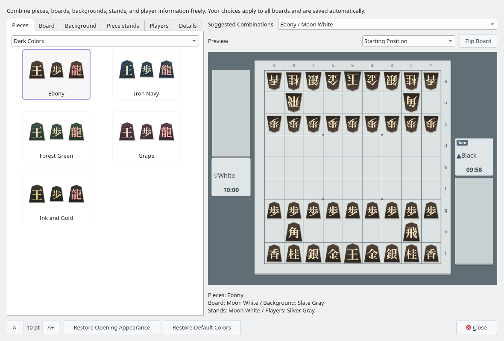
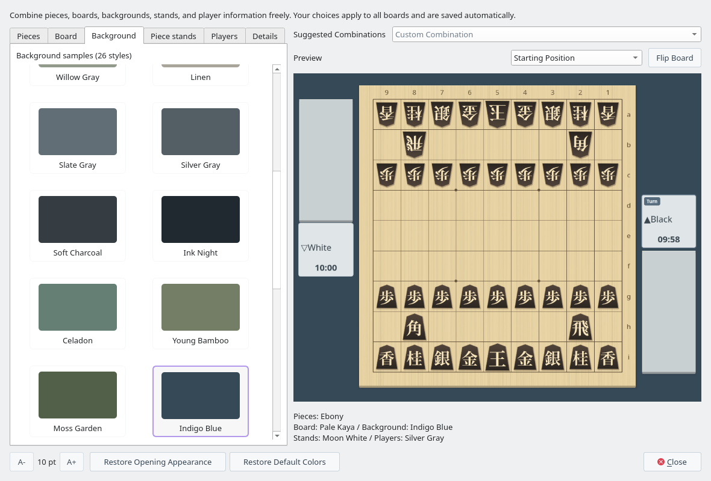
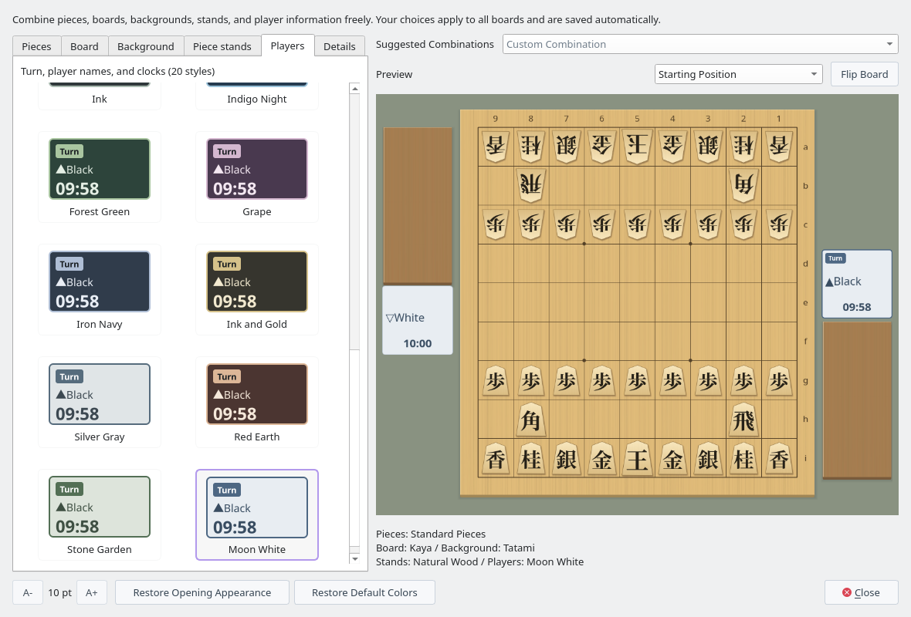
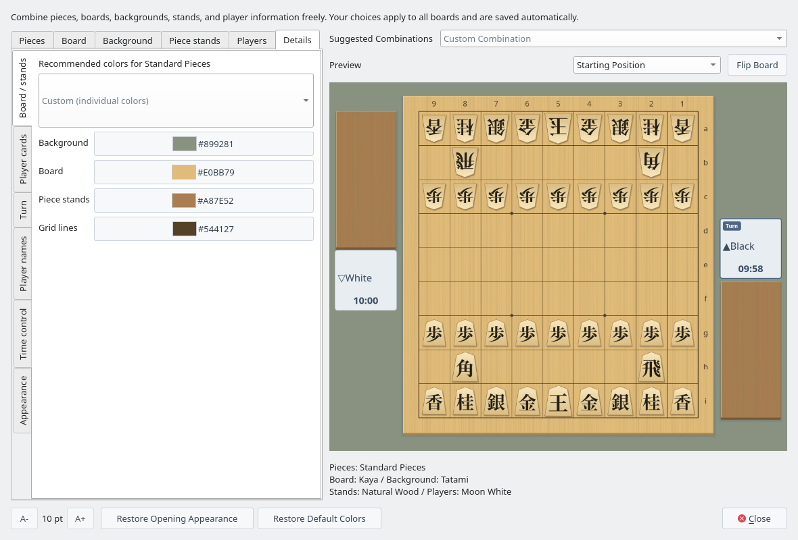

Game Appearance
Combine five components freely from visual samples
Screenshots were captured on Linux with the English interface.
Open the Appearance Window
Choose View → Game Appearance…. This window replaces the former Piece Style and Board Colors menus.
Select samples on the left and check the combined result in the preview on the right. Your choices apply to all boards immediately and are saved automatically. The names of the five selected components are shown below the preview.


Suggested combination Ebony / Moon White (Pieces tab filtered by Dark Colors)
Choose the Five Components Independently
| Tab | Samples | What Changes |
|---|---|---|
| Pieces | 40 | Standard, tiger grain, natural wood, light colors, dark colors, Sengoku Kanji, chess-inspired, and alphabet pieces. You can filter by group (Piece Styles). |
| Board | 26 | Board color and grain, and grid lines. |
| Background | 26 | The background color around the board and stands. |
| Piece stands | 26 | Color and grain of the stands for captured pieces. |
| Players | 20 | Cards, Turn badges, player names, clocks, and time warning colors. |
Choosing one component keeps the others. Changing the board keeps the background color, and changing the background keeps the board color, grain, and grid lines. Board and stand grain can also be set independently.
| Component | Samples |
|---|---|
| Board | Kaya, Pale Kaya, Golden Kaya, Amber, Walnut, Dark Brown, Pale Paulownia, Linen, Moon White, Silver Gray, Soft Charcoal, Ink Night, Celadon, Young Bamboo, Moss Garden, Indigo Blue, Pale Cherry, Wisteria Gray, Sandstone, Blue Gray |
| Background | Tatami, Pale Green, Pine Green, Dark Brown, Walnut, Charcoal, Willow Gray, Linen, Slate Gray, Silver Gray, Soft Charcoal, Ink Night, Celadon, Young Bamboo, Moss Garden, Indigo Blue, Pale Cherry, Wisteria Gray, Sandstone, Blue Gray |
| Piece stands | Natural Wood, Pale Kaya, Golden Kaya, Amber Wood, Walnut, Ebony, Pale Paulownia, Linen, Moon White, Silver Gray, Soft Charcoal, Ink Night, Celadon, Young Bamboo, Moss Garden, Indigo Blue, Pale Cherry, Wisteria Gray, Sandstone, Blue Gray |
Boards, backgrounds, and piece stands also have six samples matched to the chess-inspired and alphabet pieces: Chess · Wood, Chess · White, Chess · Ink, Alphabet · Wood, Alphabet · White, and Alphabet · Ink.


Board changed to Pale Kaya and background to Indigo Blue
Suggested Combinations and Preview
Twenty-four combinations, including Ebony / Moon White, Pale Wood / Ink Night, Light Tiger Grain / Pale Kaya, nine chess-inspired sets, and nine alphabet sets, provide starting points. A suggested combination changes all five components, including the background. You can then choose each component separately (the field then shows Custom Combination).
The preview uses the same rendering as the game screen. Use Promoted and Captured Pieces and Flip Board to check the readability of the lettering and the pieces in hand. These preview controls do not affect a game in progress.
20 Player Information Styles
Choose from Spring Green, Linen, Porcelain, Cherry Mist, Wisteria Mist, Celadon, Pale Aqua, Sand Dune, Amber, Walnut, Ink, Indigo Night, Forest Green, Grape, Iron Navy, Ink and Gold, Silver Gray, Red Earth, Stone Garden, and Moon White. Both light and dark cards are available.


Player information samples (Moon White selected)
Fine Adjustments and Saved Settings
On the Details tab, you can change the 18 colors of the board and stands, player cards, Turn badge, player names, and clocks one by one. Background and border colors can also be made transparent. Appearance sets the piece size (90–112%), piece shadows, and the board and stand grain separately. Individual color changes are shown as Custom (individual colors).
Restore Opening Appearance restores the pieces, colors, and textures from when this window was opened. Restore Default Colors resets only the 18 colors.
The selected appearance, window size, last tab, and piece filter are saved. The same appearance is used on principal variation and tsume shogi boards and in exported board images.


Board / stands on the Details tab